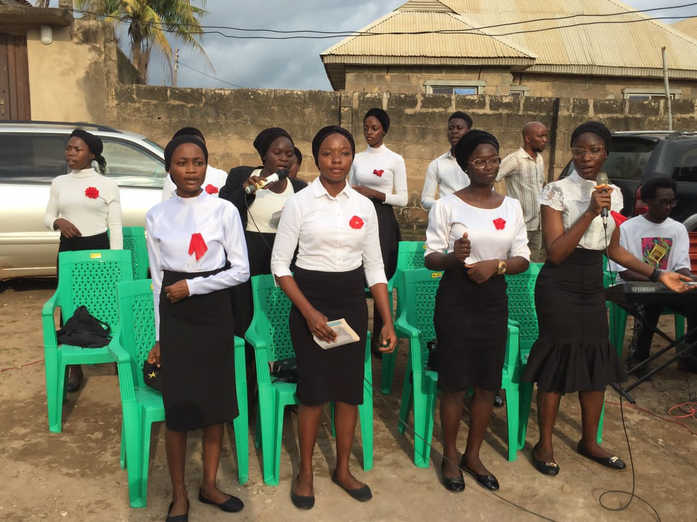

Kay Technical Evangelical Film Ministries started during the Easter period in April 1994 when the first movie was dedicated. When the ministry clocked 16years, God spoke to me to begin a church. Before then, followers of the ministry (on radio and TV) had encouraged us to do that, but I didn't want to take on the burden of church administration. I preferred going to church and performing my Evangelist duties by winning souls for Christ. In 2005, a great minister of God, prophet T. Ojotisa, visited us during a Bible studies session with our new converts. He said God revealed to him that a great ministry sprang forth from here. He encouraged me to pray about it, and advice but I shelved after his departure. In 2010, God spoke to me through a vision to start a church, but because I had no interest, I did not respond to the vision. Again, God sent my friend to me in a vision. In the vision, he told me he was going to CAC (corporate Affairs Commission) to register a business name. I asked him to check a name for me too. I woke up with the name and immediately scribbled it out. I did nothing to pursue the vision. We went through a difficult time in 2011, when things started falling apart in the ministry. The radio and television programs stopped. Film production ceased, offices were locked and debt free, things became incredibly tough during this period, things turned upside down by the end of 2011 Into the New Year of 2012. The only saving Grace was God kept mummy in service. Things continued that way till the end 2012. These struggles pushed me to seek God's face from December, 1 of 2012. "I didn't commit adultery, I had not stolen from anyone, what could have caused all these?" I thought. This time I had completely forgotten the vision. I continued praying till 31st December seeking God's face. I prayed to Him to reveal what the source of the problem was. In this 31 days, God didn't speak to me. I continued again in the New Year for 3weeks. By this time, I literally lived under a tree outside my house praying to God and asking questions. The third week into the New Year, I heard God speak into my heart, He said, Psalm 23. I was praying at this time and had slept off when I heard it. I woke up, carried my Bible and started reading. "The Lord is my shepherd I shall not want, He makes me to lie down in green pastures......". The word "green pastures" rung a bell in my spirit, I was aware that shepherds leads their flocks to green pastures, but that wasn't enough, I wanted to know more. I consulted my Bible dictionary for more information, before then, it had been 8weeks since I visited my study, I got to my reading table and saw the message I got in 2010 in a vision. Everything started clearing before me like a clip on the wall. I saw how God had helped us in the past, how piracy had affected the ministry and how God had helped us till He told me to start a Church. "You are in a bondage now and you want freedom. I asked you to set people free, but you refused. How will you be free?". I was humbled with this and went back to God to seek for mercy and forgiveness of sins. I made up my mind there and then to start the ministry. Afterwards, plans for the vision went underway. I notified the pastor of my church, Rev. Segun Akinlade and told him what God was leading me to do, he gave me the go ahead and support. I had told my family not to tell anyone of our imminent departure until the pastor announced it. We left the church without any single member coming with us except my family. The church was inaugurated on July 7th, 2013 by Apostle Sunday Popoola and the first service was held July 14th, 2013. The church, which clocked 10 years on July 14th, 2023, started with 4 families but today, the Lord has done wonders. Since the first anniversary, the church has always gone on village outreaches to celebrate it's anniversary. Many souls has been converted and lives blessed in our programs. Our quarterly "I'm the next to receive mercy" program has drawn many closer to God and has settled cases. Hallelujah to God!